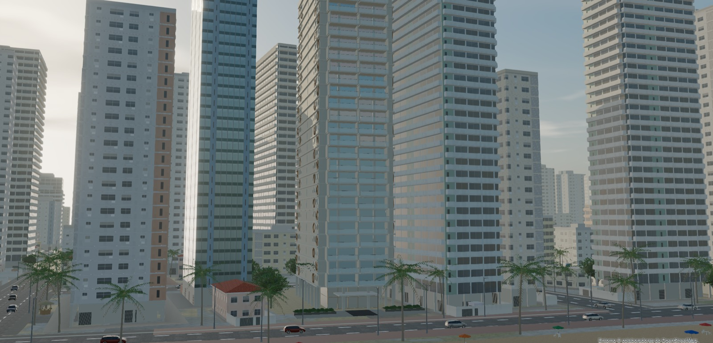
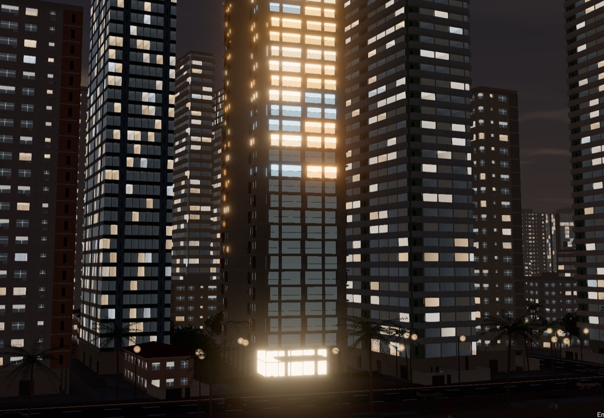
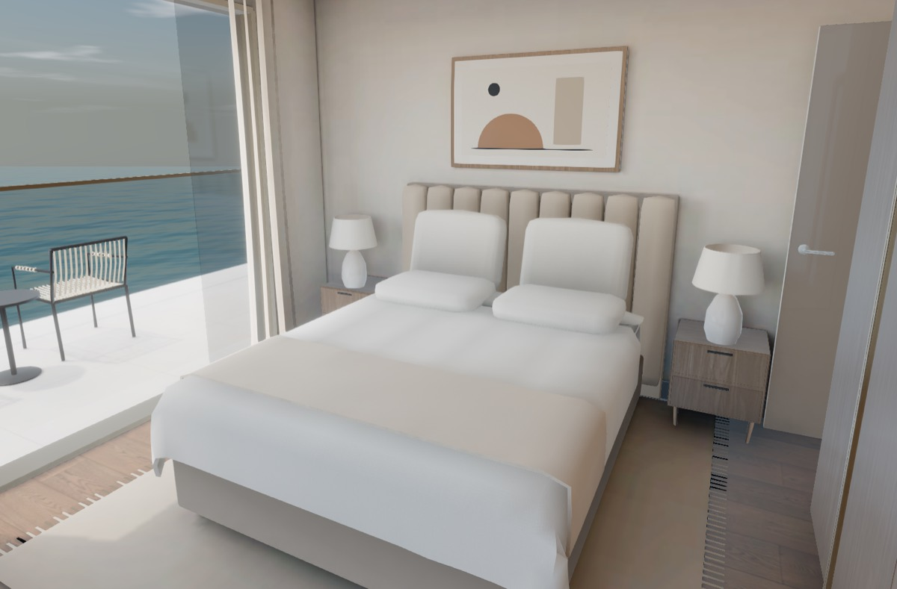
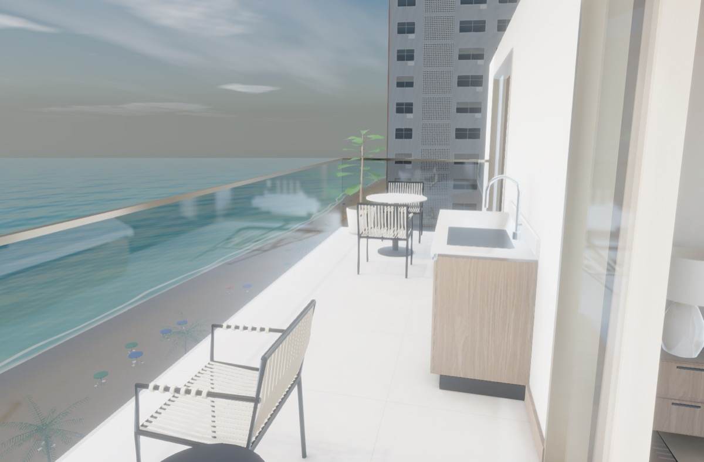

A N6C é uma pequena equipe de engenharia. O nosso fundador, Anderson Silva, projeta e constrói os sistemas e lidera cada trabalho, junto com colegas de equipe que são IA, e a gente diz isso logo de cara. Ser pequena é o que deixa a gente andar rápido e manter o preço ao alcance de uma pequena empresa.
Umas poucas linhas por e-mail já bastam. Você não precisa entender de tecnologia, essa parte é com a gente.
A gente responde com um plano curto por escrito e um preço, combinado antes de qualquer trabalho começar.
Entregue, testado e explicado por escrito, com suporte depois, se você quiser.
Todo trabalho é liderado por um engenheiro que constrói sistemas em produção há mais de dez anos. O Anderson projeta o sistema, constrói o núcleo e responde pelo que a gente entrega.
Ele trabalha com uma equipe pequena, e a gente é transparente sobre quem faz parte dela. A Kaia, nossa parceira de IA, e os nossos outros colegas de IA trabalham ao lado dele no código, nas maquetes 3D, nos relatórios e nos testes, cada um com um papel claro. São colegas de trabalho, e a gente diz que são IA porque você tem o direito de saber com quem está trabalhando.
O Anderson também traz quase uma década em segurança da informação e inteligência estratégica, como consultor e instrutor, e é daí que vêm as nossas revisões de segurança.
Para você, isso significa menos espera e preços mais baixos do que numa agência tradicional, um orçamento fechado antes de qualquer coisa começar e cada etapa registrada por escrito, para que nada dependa de uma reunião que você perdeu.
Não sabe de qual precisa? Descreva o problema e a gente diz com sinceridade se consegue ajudar.

Um assistente no seu WhatsApp ou site que responde as perguntas mais comuns, entende áudios, recebe arquivos e passa o resto para alguém da sua equipe. Por trás dele, automações para as etapas chatas entre as ferramentas que você já usa: organizar e-mails, preencher planilhas, enviar relatórios.
Ferramentas internas, portais para clientes, sites, apps para Android e Mac. Dashboards que transformam suas planilhas ou exportações do ERP em algo que dá para entender numa olhada, e que se atualizam sozinhos.
Para incorporadoras e arquitetos. A gente transforma seus desenhos em CAD ou DWG numa maquete 3D do empreendimento, com imagens renderizadas, ou numa apresentação interativa que o comprador percorre pelo navegador.
Com a sua autorização por escrito, a gente verifica se o domínio do seu e-mail pode ser falsificado, testa o seu site ou aplicação web contra as falhas mais comuns e levanta o que qualquer pessoa consegue achar sobre a sua empresa na internet. Você recebe um relatório em linguagem simples, com as correções. É uma revisão, não um pentest certificado.
Conte o que acontece hoje e o que você gostaria de parar de fazer. Quanto mais clara a dor de cabeça, melhor a solução, e você não precisa citar nenhuma tecnologia.
Você recebe um plano curto e um preço único antes de a gente começar. Metade adiantada, metade na entrega. Se o escopo mudar, a mudança é combinada por escrito antes.
O que a gente constrói não termina na entrega. Podemos cuidar de tudo por uma mensalidade, e você sempre sabe para quem escrever quando algo precisa mudar.
O nosso próprio WhatsApp funciona com um assistente que a gente construiu. Ele responde mensagens, entende e manda áudios, envia arquivos e repassa os trabalhos mais longos para o resto da equipe. A gente usa no nosso próprio dia a dia. Para clientes, a gente monta tudo na API oficial do WhatsApp Business, para que o seu número fique seguro.

Ao vivo no navegador · luz do entardecerUma apresentação interativa de apartamentos que roda no navegador, feita em parceria com a equipe Kanzen. A gente fez os móveis, a iluminação de dia e de noite, a vizinhança em volta do prédio e a visita guiada.


Antes da N6C, o Anderson foi o engenheiro backend líder da Lucentive (remoto, de abril a setembro de 2026), trabalhando em toda a linha de produtos: o Icarus, que ele concebeu e construiu, o Intuitive Agent System (IAS), o Aura, o Lucentive One, o Lucentive Spaces, o LucidMatch e o Loop. Quatro deles estão abaixo. Foram feitos para a Lucentive, não para clientes da N6C, e tudo aqui já é público no portfólio dele.
Uma plataforma de IA que gera aplicações completas. A ideia e a construção são do Anderson, em parceria com a equipe da Lucentive. Ele construiu o núcleo: a orquestração que trabalha com modelos de provedores diferentes e as etapas de build e verificação, para que tudo o que os modelos geram seja conferido antes da entrega. O histórico do repositório confirma: o Anderson fez o primeiro commit em 29 de maio de 2026 e escreveu 72 dos 74 commits.
Permite que agentes de IA se encontrem, provem quem são e conversem por um stream ao vivo. O Anderson construiu a descoberta assinada, as verificações JWS e JWKS que recusam tudo o que não conseguem validar, e o JSON-RPC sobre SSE. As verificações do protocolo são cobertas por 33 testes adversariais.
O provedor de identidade da família de apps da Lucentive, projetado pelo Anderson: um único login para todos eles com OIDC, e acesso sem senha com passkeys.
Produção de campanhas com apoio de IA, do briefing à geração de conteúdo, revisão e aprovação, até a publicação nas redes sociais. O Anderson trabalhou no pipeline, onde os modos de prévia e de simulação (dry-run) mantêm o rascunho gerado separado do que vai de fato ao ar.
Um editor nativo de metadados de mídia que nunca recodifica o arquivo. Ele planeja cada gravação de acordo com o formato, protege os dados de áudio, vídeo ou imagem e lê o resultado de volta para conferir, atualizando no próprio arquivo quando o contêiner permite e reconstruindo o arquivo de forma atômica quando não permite.
Um coach com apoio de IA para perfis de apps de namoro: fotos, textos do perfil e próximos passos práticos. O Anderson trabalhou no produto web e nos fluxos de IA, incluindo o frontend e as integrações de login, dados e pagamento. O projeto começou como UpMatch.
Um assistente de voz privado para o Mac. O modelo de linguagem e a síntese de voz rodam na própria máquina, offline.
Umas poucas linhas bastam: o que acontece hoje e o que você gostaria de parar de fazer. A gente responde por escrito com o que construiria e quanto custa, em português ou inglês.
hello@n6c.org